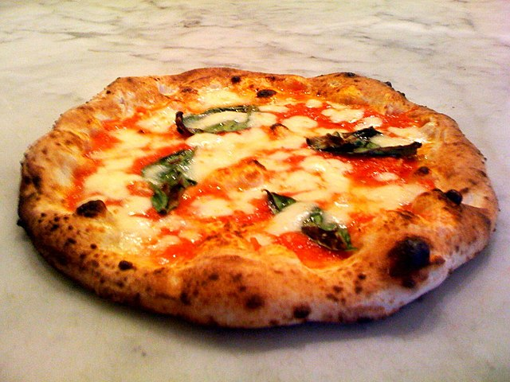

Pizza

Pizza, a beloved Italian creation, is a mouthwatering dish that combines a
thin, crispy crust with flavorful tomato sauce, gooey cheese, and an
endless array of delicious toppings. Its universal appeal and diverse
variations have made it a global culinary icon.
Ingredients for an authentic Italian Pizza
- Pizza dough
- Tomato sauce
- Mozzarella cheese
-
Toppings (such as pepperoni, mushrooms, onions, bell peppers, olives,
etc.)
- Olive oil
- Fresh basil leaves
- Salt
- Parmesan cheese (optional)
Steps
- Preheat the oven to the recommended temperature for baking pizza.
- Roll out the pizza dough into the desired shape and thickness.
-
Place the rolled-out dough on a baking sheet or pizza stone lightly
dusted with flour or cornmeal.
-
Spread a layer of tomato sauce evenly over the dough, leaving a small
border around the edges.
-
Sprinkle a generous amount of shredded mozzarella cheese over the sauce.
-
Add your desired toppings, such as pepperoni, mushrooms, onions, bell
peppers, or olives.
- Drizzle a little olive oil over the pizza for added flavor.
-
Optional: Tear some fresh basil leaves and sprinkle them over the pizza.
-
Carefully transfer the pizza to the preheated oven and bake for the
recommended time or until the crust turns golden brown and the cheese is
melted and bubbly.
- Remove the pizza from the oven and let it cool for a few minutes.
-
Optional: Sprinkle grated Parmesan cheese on top for added flavor.
- Slice the pizza into desired portions and serve hot.